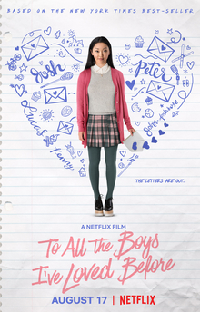
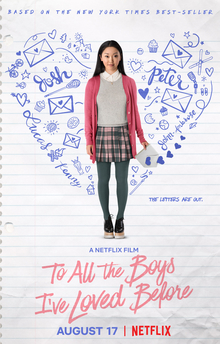

My top 5 favourite movies are End Game, The Hunger Games , The Hate You Give , Jhonny English Strikes Again and To All The Boys I've Loved Before.
End game is about getting all the infinite stones to save the world but while superheros are tryin to save the world some might pass.
The Hunger Games is about a girl that lives in a district called district 12. The presedent of all the distircts hosts a game called hungergames. Hungergames is where evryone in all the districts has to try and survive and be the last person alive.
The Hate You Give is about a girl named Starr and her friend khalil was shot dead by a cop because he thought that his hairbrush was a gun and because he was black.Starr is trying to get khalils justice but its hard to fight it when there are so many riots
Jhonny English Strikes Again is about Jhonny aka Mr. Bean, who is called out of retirement because a cyberattack reveled the identities of all the active undercover british agents. So he has to try and track down the hacker.
To all The Boys I've Loved Before is about this girl named Lara jean and she has letters that she wrote about all the crushes that she has or had.Her little sister named kitty sended all the letters that lara jean wrote to her crushes.SH had to have a fake relationship with a guy that she wrote to but they both started to have feelings.

 
